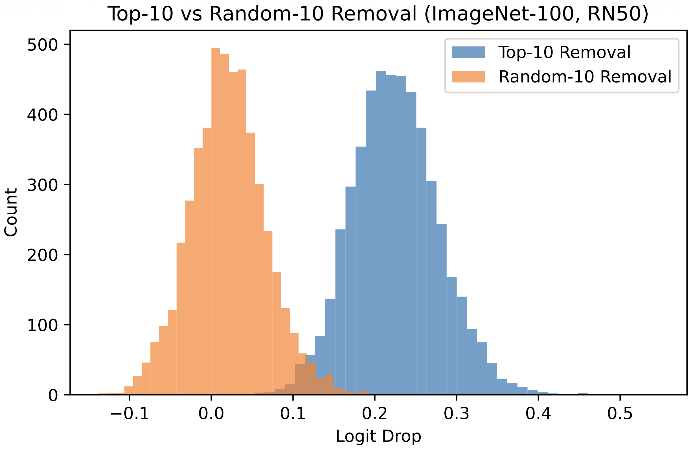
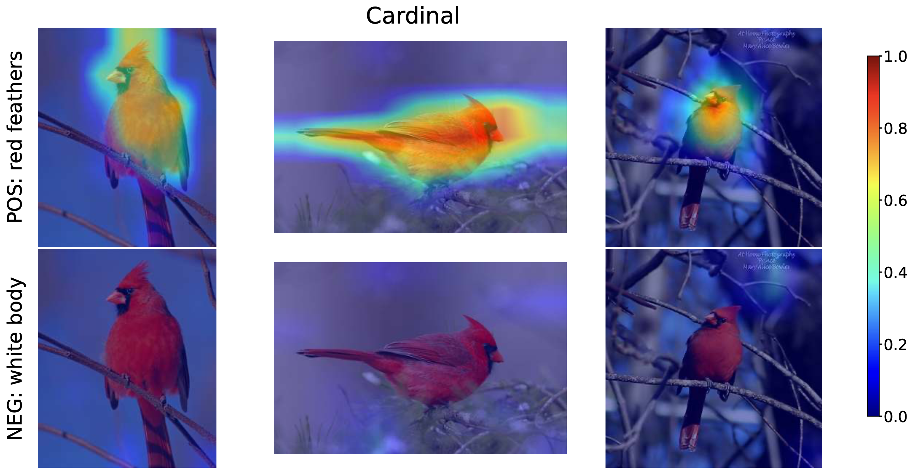
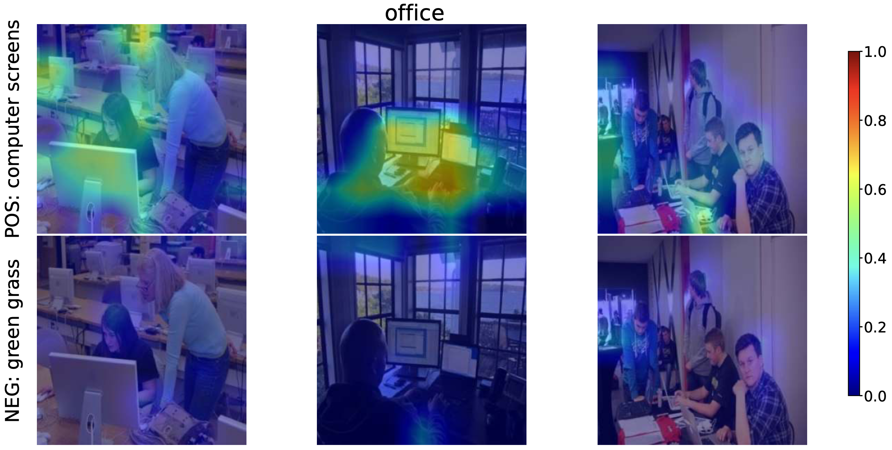
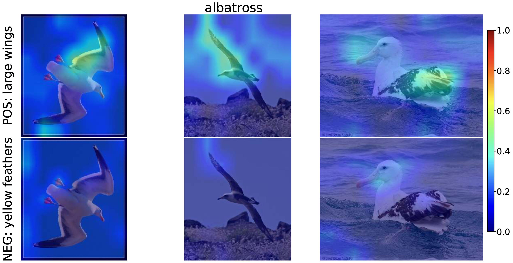

Large-scale vision-language models such as CLIP have achieved remarkable success in zero-shot image recognition, yet their predictions remain largely opaque to human understanding. In contrast, Concept Bottleneck Models provide interpretable intermediate representations by reasoning through human-defined concepts, but they rely on concept supervision and lack the ability to generalize to unseen classes.
We introduce EZPC (pronounced "easy-peasy") that bridges these two paradigms by explaining CLIP's zero-shot predictions through human-understandable concepts. Our method projects CLIP's joint image-text embeddings into a concept space learned from language descriptions, enabling faithful and transparent explanations without additional supervision. The model learns this projection via a combination of alignment and reconstruction objectives, ensuring that concept activations preserve CLIP's semantic structure while remaining interpretable.
Extensive experiments on five benchmark datasets, CIFAR-100, CUB-200-2011, Places365, ImageNet-100, and ImageNet-1k, demonstrate that our approach maintains CLIP's strong zero-shot classification accuracy while providing meaningful concept-level explanations. By grounding open-vocabulary predictions in explicit semantic concepts, our method offers a principled step toward interpretable and trustworthy vision-language models.
We evaluate EZPC on five benchmark datasets (CIFAR-100, ImageNet-100, CUB, ImageNet-1k, and Places365) under the generalized zero-shot setting. EZPC maintains strong performance close to CLIP while providing concept-level explanations, and outperforms prior explainable zero-shot methods such as Z-CBM and SpLiCE. These results show that projecting CLIP embeddings into a concept space preserves semantic structure without sacrificing accuracy.
| Model | CIFAR-100 | ImageNet-100 | CUB | ImageNet-1k | Places365 | ||||||||||
|---|---|---|---|---|---|---|---|---|---|---|---|---|---|---|---|
| Seen | Unseen | H | Seen | Unseen | H | Seen | Unseen | H | Seen | Unseen | H | Seen | Unseen | H | |
| CLIP | 0.370 | 0.454 | 0.408 | 0.680 | 0.707 | 0.693 | 0.468 | 0.481 | 0.474 | 0.513 | 0.548 | 0.530 | 0.350 | 0.375 | 0.362 |
| Z-CBM | 0.319 | 0.425 | 0.365 | 0.592 | 0.579 | 0.585 | 0.183 | 0.195 | 0.189 | 0.439 | 0.486 | 0.462 | 0.349 | 0.365 | 0.357 |
| SpLiCE | 0.248 | 0.298 | 0.270 | 0.371 | 0.409 | 0.389 | 0.100 | 0.053 | 0.070 | 0.275 | 0.331 | 0.300 | 0.276 | 0.288 | 0.282 |
| EZPC | 0.365 | 0.449 | 0.403 | 0.675 | 0.690 | 0.682 | 0.457 | 0.473 | 0.465 | 0.468 | 0.494 | 0.481 | 0.339 | 0.366 | 0.352 |
Table 1. Generalized zero-shot classification accuracy (Seen, Unseen, Harmonic mean). EZPC achieves performance close to CLIP while remaining fully interpretable, and substantially outperforms Z-CBM and SpLiCE across all datasets.
We train the concept projection on ImageNet-100 and evaluate on CIFAR-100 and CUB without any fine-tuning. EZPC transfers effectively across domains, maintaining performance close to CLIP on both object-centric and fine-grained datasets. This demonstrates that the learned concept space captures general visual semantics that are not dataset-specific.
| Target Dataset | Model | Zero-shot | Generalized Zero-shot | |||
|---|---|---|---|---|---|---|
| Seen | Unseen | Seen | Unseen | H | ||
| CIFAR-100 | CLIP | 0.686 | 0.387 | 0.663 | 0.266 | 0.380 |
| EZPC | 0.684 | 0.363 | 0.659 | 0.296 | 0.409 | |
| CUB | CLIP | 0.686 | 0.471 | 0.617 | 0.458 | 0.526 |
| EZPC | 0.674 | 0.461 | 0.607 | 0.448 | 0.515 | |
Table 2. Cross-dataset transfer: projection trained on ImageNet-100, evaluated on CIFAR-100 and CUB. EZPC stays within 1-3% of CLIP without any retraining.
A key advantage of EZPC is its computational efficiency. Unlike optimization-based methods (SpLiCE) or retrieval-based approaches (Z-CBM), EZPC performs a single matrix multiplication at inference time. This makes it suitable for large-scale deployment and interactive analysis.
| Method | Embedding (ms/img) | Full Pipeline (ms/img) | Overhead |
|---|---|---|---|
| CLIP | 0.0001 ± 0.0000 | 5.77 ± 0.55 | 1.0× |
| Z-CBM | 97.55 ± 1.33 | 542.34 ± 6.02 | 94.0× |
| SpLiCE | 4.50 ± 0.54 | 338.51 ± 4.39 | 58.7× |
| EZPC | 0.0006 ± 0.0000 | 5.90 ± 0.73 | ∼1.0× |
Table 3. Inference time on ImageNet-100 (NVIDIA H100 GPU). EZPC adds only ~0.1 ms per image over CLIP, while Z-CBM and SpLiCE are 94× and 59× slower respectively.

Are EZPC's explanations faithful? We test this by ablating the top-n most influential concepts and measuring the effect on predictions. If the identified concepts are causally responsible, removing them should degrade model confidence.
| Top-n | Logit Drop | Flip Rate |
|---|---|---|
| 1 | 0.0306 | 0.059 |
| 3 | 0.0816 | 0.099 |
| 5 | 0.1263 | 0.132 |
| 10 | 0.2256 | 0.169 |
Table 4a. Logit drop and prediction flip rate increase monotonically with n, confirming causal involvement of top-ranked concepts.
| Removal Type | Flip Count | Flip Rate |
|---|---|---|
| Top-10 concepts | 845 | 0.169 |
| Random-10 concepts | 70 | 0.014 |
Table 4b. Removing the top-10 concepts flips predictions 12× more often than removing 10 random concepts, confirming that explanations reflect true causal structure.
EZPC is backbone-agnostic. We evaluate it across four CLIP/SigLIP architectures of increasing capacity. Larger backbones consistently improve both zero-shot and generalized zero-shot performance, showing that the concept-based decomposition scales naturally with model capacity.
| Backbone | Variant | Zero-shot | Generalized Zero-shot | |||
|---|---|---|---|---|---|---|
| Seen | Unseen | Seen | Unseen | H | ||
| CLIP RN50 | Base | 0.706 | 0.855 | 0.680 | 0.707 | 0.693 |
| EZPC | 0.699 | 0.851 | 0.675 | 0.690 | 0.682 | |
| CLIP ViT-B/32 | Base | 0.729 | 0.887 | 0.703 | 0.715 | 0.709 |
| EZPC | 0.724 | 0.879 | 0.694 | 0.716 | 0.705 | |
| CLIP ViT-L/14 | Base | 0.839 | 0.925 | 0.821 | 0.836 | 0.828 |
| EZPC | 0.832 | 0.924 | 0.812 | 0.831 | 0.822 | |
| SigLIP ViT-SO400M/14 | Base | 0.882 | 0.972 | 0.871 | 0.889 | 0.880 |
| EZPC | 0.880 | 0.972 | 0.870 | 0.886 | 0.878 | |
Table 5. Backbone ablation on ImageNet-100. EZPC consistently retains near-baseline performance across all architectures, with stronger backbones yielding higher absolute accuracy.
We present qualitative results demonstrating EZPC's interpretability at multiple levels: per-image concept explanations, class-level concept distributions, concept-based image retrieval, and spatial grounding of concepts in image regions.


Figure 1. Image-level explanations: for each prediction, EZPC reveals the top contributing concepts and their activation scores, showing which human-understandable attributes drive CLIP's decision.


Figure 2. Class-level concept distributions: aggregated concept activations across all images of a class, showing which concepts consistently characterize each category.


Figure 3. Concept clustering: for each concept, we retrieve the images with the highest activation scores, showing that learned concepts capture coherent visual patterns across diverse images.



Figure 4. Concept-region alignment: spatial heatmaps showing where each concept activates in the image, demonstrating that EZPC grounds its explanations in semantically meaningful regions.
We acknowledge the computational resources provided by METU Center for Robotics and Artificial Intelligence (METU-ROMER) and TUBITAK ULAKBIM TRUBA. Dr. Alaniz is supported by Hi! PARIS and ANR/France 2030 program (ANR-23-IACL-0005). Dr. Akata acknowledges partial funding by the ERC (853489 - DEXIM) and the Alfried Krupp von Bohlen und Halbach Foundation. Dr. Akbas gratefully acknowledges the support of TUBITAK 2219.
@inproceedings{ozdemir2026ezpc,
title = {Explaining CLIP Zero-shot Predictions Through Concepts},
author = {Ozdemir, Onat and Christensen, Anders and Alaniz, Stephan and Akata, Zeynep and Akbas, Emre},
booktitle = {Proceedings of the IEEE/CVF Conference on Computer Vision and Pattern Recognition (CVPR)},
year = {2026}
}